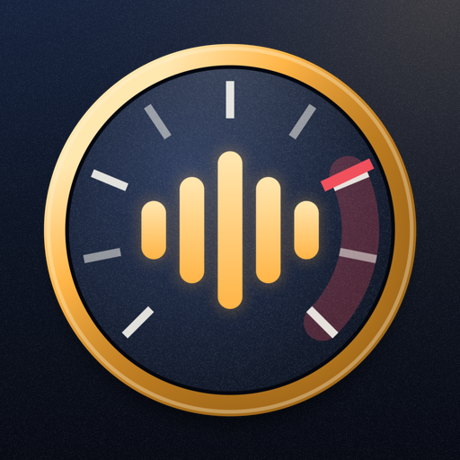

NoiseFilePrivacy policy
Effective September 30, 2026
NoiseFile is a local-first Android app. The app does not create user accounts, show ads, use analytics, or send personal information to the developer.
Microphone
NoiseFile uses the microphone only while you record or run the microphone check. Sound is turned into level numbers on the phone. The loudest 10 seconds of an incident are kept as a sound clip on the phone. You can drop the clip before saving. Nothing is uploaded.
Photos
You can add up to two photos to an incident. The app keeps its own copies on the phone. Nothing is uploaded.
Incident information
Saved incidents, with their dates, lengths, estimated sound levels, locations, impacts, notes, photos and sound clips, stay in private app storage on the phone. NoiseFile leaves all of it out of Android cloud backup and device transfer. Clearing NoiseFile's app data or deleting the app removes it for good.
User-directed sharing and official links
NoiseFile can prepare complaint text, a plain-text incident history, or a PDF report. The app shares it only when the user chooses Android's share command and selects a destination. NoiseFile can also open an official city website or phone dialer selected by the user. The chosen website, phone service, or sharing app handles information under its own privacy policy.
Purchases
NoiseFile has one optional one-time purchase, the unlock for the PDF report, the city form guide and the filled-in city email. Google Play handles the payment under Google's own privacy policy. The app receives only a purchase record from Google Play, which it keeps on the phone to remember that the unlock is open. No payment details reach the developer.
Children
NoiseFile is intended for adults handling neighborhood noise complaints and is not directed to children under 13.
Changes
Material changes to this policy will be posted on this page with a new effective date.
Contact
Questions about NoiseFile privacy can be sent to gugosf@gmail.com.